Por dónde empezar
- Abre la Guía de Confección y Transformación de Patrones: te explica cómo imprimir los patrones y cómo tomar las medidas.
- Elige el patrón y descárgalo: coge un patrón de la colección y bájatelo en A4 por partes (para la impresora de casa) o en plóter (una sola hoja a tamaño real).
- Imprime al 100 % y mide: el cuadrado de control tiene que dar 10 × 10 cm.
- Antes de usar la tela definitiva, cose una primera toile de prueba.
Guías de confección
La costura, el patronaje, el ajuste y los acabados, y los regalos I, II y III.
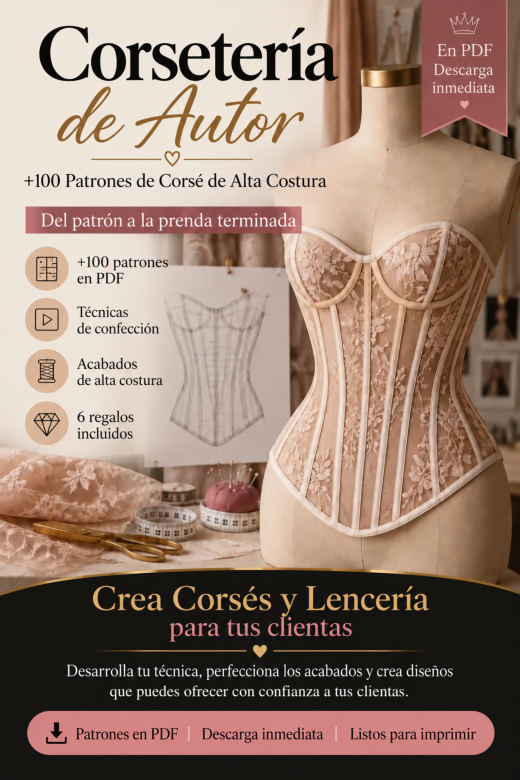
Guía de Confección y Transformación de PatronesImprimir y montar los patrones, tomar medidas, adaptar el patrón a otras medidas, la toile de prueba, la costura de precisión, los acabados y la presentación de prendas a medida.
Abrir PDF- Guía para Trabajar el Tul Transparente
Cómo estabilizar, cortar y coser el tul con menos deformación y más control.
Abrir PDF - Lista de Verificación de Acabados
Los detalles que más se escapan: revísalos antes de fotografiar la prenda o de entregarla.
Abrir PDF 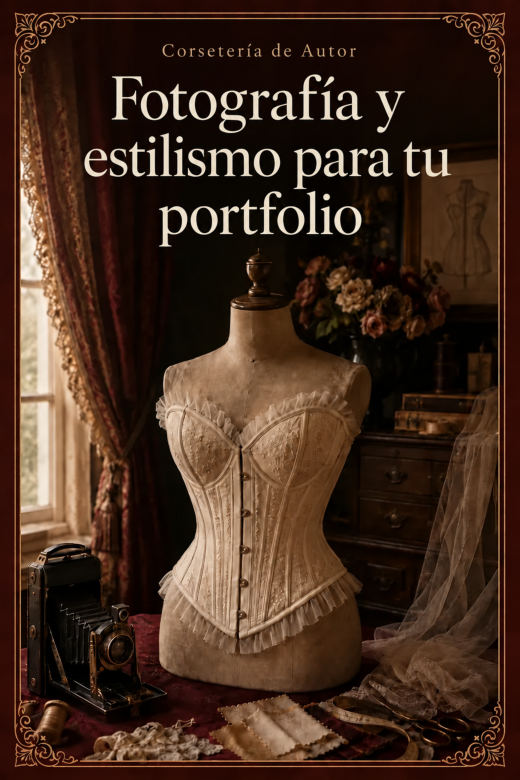
Fotografía y Estilismo para tu PortfolioLa luz, el fondo, 8 fotos por prenda, el estilismo y cómo montar tu portfolio con el móvil.
Abrir PDF
No hay ningún patrón con ese nombre. Prueba con otra palabra.
Corsetería de Autor · 110 patrones de corsé
110 patrones en PDF · cada uno en A4 por partes y en plóter a tamaño real.
Cinturones corsé 8
 CORSE 001Cinturón corsé · 4 piezas · borde recto
CORSE 001Cinturón corsé · 4 piezas · borde recto CORSE 002Cinturón corsé · 4 piezas · borde en punta
CORSE 002Cinturón corsé · 4 piezas · borde en punta CORSE 003Cinturón corsé · 4 piezas · borde curvo
CORSE 003Cinturón corsé · 4 piezas · borde curvo CORSE 004Cinturón corsé · 4 piezas · borde asimétrico
CORSE 004Cinturón corsé · 4 piezas · borde asimétrico CORSE 005Cinturón corsé · 5 piezas · borde recto
CORSE 005Cinturón corsé · 5 piezas · borde recto CORSE 006Cinturón corsé · 5 piezas · borde en punta
CORSE 006Cinturón corsé · 5 piezas · borde en punta CORSE 007Cinturón corsé · 5 piezas · borde curvo
CORSE 007Cinturón corsé · 5 piezas · borde curvo CORSE 008Cinturón corsé · 5 piezas · borde asimétrico
CORSE 008Cinturón corsé · 5 piezas · borde asimétrico
Fajas de cintura 12
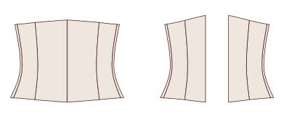
CORSE 009Faja de cintura · 5 piezas · borde recto CORSE 010Faja de cintura · 5 piezas · borde en punta
CORSE 010Faja de cintura · 5 piezas · borde en punta CORSE 011Faja de cintura · 5 piezas · borde curvo
CORSE 011Faja de cintura · 5 piezas · borde curvo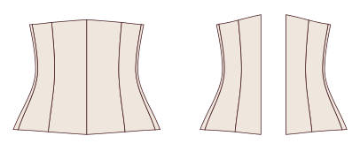
CORSE 012Faja de cintura · 5 piezas · borde prolongado sobre la cadera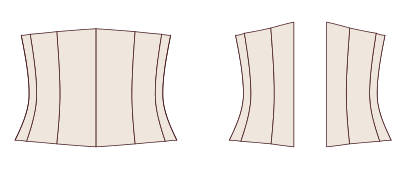
CORSE 013Faja de cintura · 6 piezas · borde recto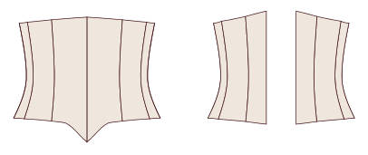
CORSE 014Faja de cintura · 6 piezas · borde en punta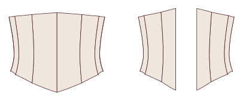
CORSE 015Faja de cintura · 6 piezas · borde curvo CORSE 016Faja de cintura · 6 piezas · borde prolongado sobre la cadera
CORSE 016Faja de cintura · 6 piezas · borde prolongado sobre la cadera CORSE 017Faja de cintura · 7 piezas · borde recto
CORSE 017Faja de cintura · 7 piezas · borde recto CORSE 018Faja de cintura · 7 piezas · borde en punta
CORSE 018Faja de cintura · 7 piezas · borde en punta CORSE 019Faja de cintura · 7 piezas · borde curvo
CORSE 019Faja de cintura · 7 piezas · borde curvo CORSE 020Faja de cintura · 7 piezas · borde prolongado sobre la cadera
CORSE 020Faja de cintura · 7 piezas · borde prolongado sobre la cadera
Bajo pecho · clásicos 16
 CORSE 021Corsé bajo pecho clásico · 5 piezas · borde recto
CORSE 021Corsé bajo pecho clásico · 5 piezas · borde recto CORSE 022Corsé bajo pecho clásico · 5 piezas · borde en punta
CORSE 022Corsé bajo pecho clásico · 5 piezas · borde en punta CORSE 023Corsé bajo pecho clásico · 5 piezas · borde curvo sobre la cadera
CORSE 023Corsé bajo pecho clásico · 5 piezas · borde curvo sobre la cadera CORSE 024Corsé bajo pecho clásico · 5 piezas · borde de doble punta
CORSE 024Corsé bajo pecho clásico · 5 piezas · borde de doble punta CORSE 025Corsé bajo pecho clásico · 6 piezas · borde recto
CORSE 025Corsé bajo pecho clásico · 6 piezas · borde recto CORSE 026Corsé bajo pecho clásico · 6 piezas · borde en punta
CORSE 026Corsé bajo pecho clásico · 6 piezas · borde en punta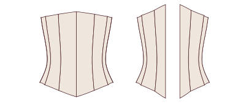
CORSE 027Corsé bajo pecho clásico · 6 piezas · borde curvo sobre la cadera CORSE 028Corsé bajo pecho clásico · 6 piezas · borde de doble punta
CORSE 028Corsé bajo pecho clásico · 6 piezas · borde de doble punta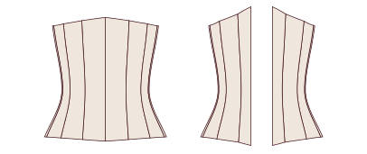
CORSE 029Corsé bajo pecho clásico · 7 piezas · borde recto CORSE 030Corsé bajo pecho clásico · 7 piezas · borde en punta
CORSE 030Corsé bajo pecho clásico · 7 piezas · borde en punta CORSE 031Corsé bajo pecho clásico · 7 piezas · borde curvo sobre la cadera
CORSE 031Corsé bajo pecho clásico · 7 piezas · borde curvo sobre la cadera CORSE 032Corsé bajo pecho clásico · 7 piezas · borde de doble punta
CORSE 032Corsé bajo pecho clásico · 7 piezas · borde de doble punta CORSE 033Corsé bajo pecho clásico · 8 piezas · borde recto
CORSE 033Corsé bajo pecho clásico · 8 piezas · borde recto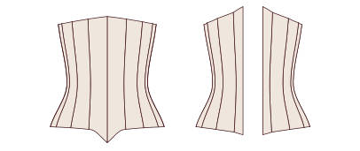
CORSE 034Corsé bajo pecho clásico · 8 piezas · borde en punta CORSE 035Corsé bajo pecho clásico · 8 piezas · borde curvo sobre la cadera
CORSE 035Corsé bajo pecho clásico · 8 piezas · borde curvo sobre la cadera CORSE 036Corsé bajo pecho clásico · 8 piezas · borde de doble punta
CORSE 036Corsé bajo pecho clásico · 8 piezas · borde de doble punta
Bajo pecho · victorianos 10
 CORSE 037Corsé bajo pecho victoriano · 6 piezas · reducción 6 cm
CORSE 037Corsé bajo pecho victoriano · 6 piezas · reducción 6 cm CORSE 038Corsé bajo pecho victoriano · 6 piezas · reducción 8 cm
CORSE 038Corsé bajo pecho victoriano · 6 piezas · reducción 8 cm CORSE 039Corsé bajo pecho victoriano · 7 piezas · reducción 6 cm
CORSE 039Corsé bajo pecho victoriano · 7 piezas · reducción 6 cm CORSE 040Corsé bajo pecho victoriano · 7 piezas · reducción 8 cm
CORSE 040Corsé bajo pecho victoriano · 7 piezas · reducción 8 cm CORSE 041Corsé bajo pecho victoriano · 8 piezas · reducción 6 cm
CORSE 041Corsé bajo pecho victoriano · 8 piezas · reducción 6 cm CORSE 042Corsé bajo pecho victoriano · 8 piezas · reducción 8 cm
CORSE 042Corsé bajo pecho victoriano · 8 piezas · reducción 8 cm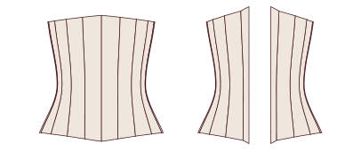
CORSE 043Corsé bajo pecho victoriano · 9 piezas · reducción 6 cm CORSE 044Corsé bajo pecho victoriano · 9 piezas · reducción 8 cm
CORSE 044Corsé bajo pecho victoriano · 9 piezas · reducción 8 cm CORSE 045Corsé bajo pecho victoriano · 10 piezas · reducción 6 cm
CORSE 045Corsé bajo pecho victoriano · 10 piezas · reducción 6 cm CORSE 046Corsé bajo pecho victoriano · 10 piezas · reducción 8 cm
CORSE 046Corsé bajo pecho victoriano · 10 piezas · reducción 8 cm
Bajo pecho · eduardianos 8
 CORSE 047Corsé bajo pecho eduardiano de delantero recto · 6 piezas · borde recto
CORSE 047Corsé bajo pecho eduardiano de delantero recto · 6 piezas · borde recto CORSE 048Corsé bajo pecho eduardiano de delantero recto · 6 piezas · borde en punta
CORSE 048Corsé bajo pecho eduardiano de delantero recto · 6 piezas · borde en punta CORSE 049Corsé bajo pecho eduardiano de delantero recto · 7 piezas · borde recto
CORSE 049Corsé bajo pecho eduardiano de delantero recto · 7 piezas · borde recto CORSE 050Corsé bajo pecho eduardiano de delantero recto · 7 piezas · borde en punta
CORSE 050Corsé bajo pecho eduardiano de delantero recto · 7 piezas · borde en punta CORSE 051Corsé bajo pecho eduardiano de delantero recto · 8 piezas · borde recto
CORSE 051Corsé bajo pecho eduardiano de delantero recto · 8 piezas · borde recto CORSE 052Corsé bajo pecho eduardiano de delantero recto · 8 piezas · borde en punta
CORSE 052Corsé bajo pecho eduardiano de delantero recto · 8 piezas · borde en punta CORSE 053Corsé bajo pecho eduardiano de delantero recto · 9 piezas · borde recto
CORSE 053Corsé bajo pecho eduardiano de delantero recto · 9 piezas · borde recto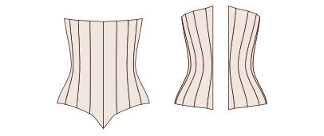
CORSE 054Corsé bajo pecho eduardiano de delantero recto · 9 piezas · borde en punta
Bajo pecho · largos 8
 CORSE 055Corsé bajo pecho largo hasta la cadera · 6 piezas · cierre frontal
CORSE 055Corsé bajo pecho largo hasta la cadera · 6 piezas · cierre frontal CORSE 056Corsé bajo pecho largo hasta la cadera · 6 piezas · cordón delante
CORSE 056Corsé bajo pecho largo hasta la cadera · 6 piezas · cordón delante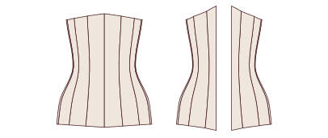
CORSE 057Corsé bajo pecho largo hasta la cadera · 7 piezas · cierre frontal CORSE 058Corsé bajo pecho largo hasta la cadera · 7 piezas · cordón delante
CORSE 058Corsé bajo pecho largo hasta la cadera · 7 piezas · cordón delante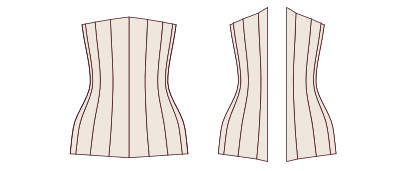
CORSE 059Corsé bajo pecho largo hasta la cadera · 8 piezas · cierre frontal CORSE 060Corsé bajo pecho largo hasta la cadera · 8 piezas · cordón delante
CORSE 060Corsé bajo pecho largo hasta la cadera · 8 piezas · cordón delante CORSE 061Corsé bajo pecho largo hasta la cadera · 9 piezas · cierre frontal
CORSE 061Corsé bajo pecho largo hasta la cadera · 9 piezas · cierre frontal CORSE 062Corsé bajo pecho largo hasta la cadera · 9 piezas · cordón delante
CORSE 062Corsé bajo pecho largo hasta la cadera · 9 piezas · cordón delante
Sobre pecho · escote recto 10
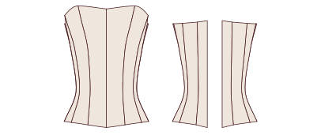
CORSE 063Corsé sobre pecho con escote recto · 6 piezas · cierre frontal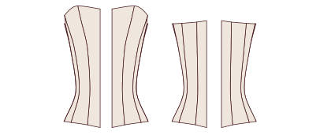
CORSE 064Corsé sobre pecho con escote recto · 6 piezas · cordón delante CORSE 065Corsé sobre pecho con escote recto · 7 piezas · cierre frontal
CORSE 065Corsé sobre pecho con escote recto · 7 piezas · cierre frontal- CORSE 066Corsé sobre pecho con escote recto · 7 piezas · cordón delante
 CORSE 067Corsé sobre pecho con escote recto · 8 piezas · cierre frontal
CORSE 067Corsé sobre pecho con escote recto · 8 piezas · cierre frontal CORSE 068Corsé sobre pecho con escote recto · 8 piezas · cordón delante
CORSE 068Corsé sobre pecho con escote recto · 8 piezas · cordón delante CORSE 069Corsé sobre pecho con escote recto · 9 piezas · cierre frontal
CORSE 069Corsé sobre pecho con escote recto · 9 piezas · cierre frontal CORSE 070Corsé sobre pecho con escote recto · 9 piezas · cordón delante
CORSE 070Corsé sobre pecho con escote recto · 9 piezas · cordón delante CORSE 071Corsé sobre pecho con escote recto · 10 piezas · cierre frontal
CORSE 071Corsé sobre pecho con escote recto · 10 piezas · cierre frontal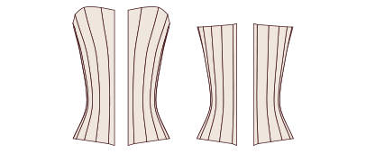
CORSE 072Corsé sobre pecho con escote recto · 10 piezas · cordón delante
Sobre pecho · escote corazón 10
 CORSE 073Corsé sobre pecho con escote corazón · 6 piezas · borde recto
CORSE 073Corsé sobre pecho con escote corazón · 6 piezas · borde recto CORSE 074Corsé sobre pecho con escote corazón · 6 piezas · borde en punta
CORSE 074Corsé sobre pecho con escote corazón · 6 piezas · borde en punta CORSE 075Corsé sobre pecho con escote corazón · 7 piezas · borde recto
CORSE 075Corsé sobre pecho con escote corazón · 7 piezas · borde recto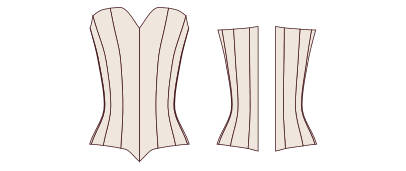
CORSE 076Corsé sobre pecho con escote corazón · 7 piezas · borde en punta CORSE 077Corsé sobre pecho con escote corazón · 8 piezas · borde recto
CORSE 077Corsé sobre pecho con escote corazón · 8 piezas · borde recto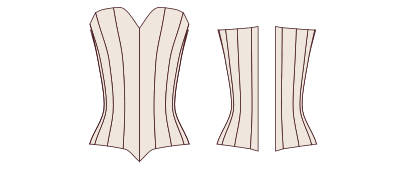
CORSE 078Corsé sobre pecho con escote corazón · 8 piezas · borde en punta CORSE 079Corsé sobre pecho con escote corazón · 9 piezas · borde recto
CORSE 079Corsé sobre pecho con escote corazón · 9 piezas · borde recto CORSE 080Corsé sobre pecho con escote corazón · 9 piezas · borde en punta
CORSE 080Corsé sobre pecho con escote corazón · 9 piezas · borde en punta CORSE 081Corsé sobre pecho con escote corazón · 10 piezas · borde recto
CORSE 081Corsé sobre pecho con escote corazón · 10 piezas · borde recto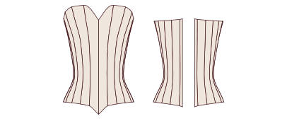
CORSE 082Corsé sobre pecho con escote corazón · 10 piezas · borde en punta
Sobre pecho · escote en pico 8
 CORSE 083Corsé sobre pecho con escote en pico suave · 6 piezas
CORSE 083Corsé sobre pecho con escote en pico suave · 6 piezas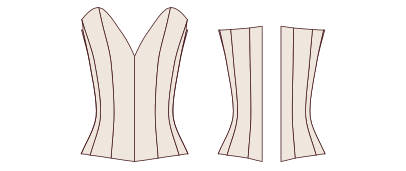
CORSE 084Corsé sobre pecho con escote en pico profundo · 6 piezas CORSE 085Corsé sobre pecho con escote en pico suave · 7 piezas
CORSE 085Corsé sobre pecho con escote en pico suave · 7 piezas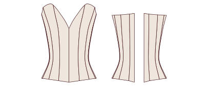
CORSE 086Corsé sobre pecho con escote en pico profundo · 7 piezas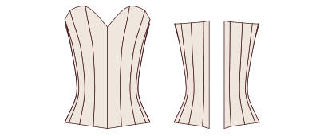
CORSE 087Corsé sobre pecho con escote en pico suave · 8 piezas CORSE 088Corsé sobre pecho con escote en pico profundo · 8 piezas
CORSE 088Corsé sobre pecho con escote en pico profundo · 8 piezas CORSE 089Corsé sobre pecho con escote en pico suave · 9 piezas
CORSE 089Corsé sobre pecho con escote en pico suave · 9 piezas CORSE 090Corsé sobre pecho con escote en pico profundo · 9 piezas
CORSE 090Corsé sobre pecho con escote en pico profundo · 9 piezas
Sobre pecho · balconette 8
 CORSE 091Corsé sobre pecho balconette · 6 piezas · borde recto
CORSE 091Corsé sobre pecho balconette · 6 piezas · borde recto CORSE 092Corsé sobre pecho balconette · 6 piezas · borde en punta
CORSE 092Corsé sobre pecho balconette · 6 piezas · borde en punta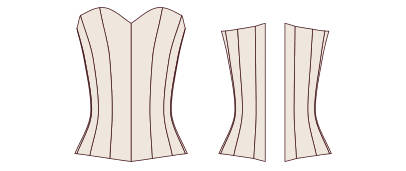
CORSE 093Corsé sobre pecho balconette · 7 piezas · borde recto CORSE 094Corsé sobre pecho balconette · 7 piezas · borde en punta
CORSE 094Corsé sobre pecho balconette · 7 piezas · borde en punta CORSE 095Corsé sobre pecho balconette · 8 piezas · borde recto
CORSE 095Corsé sobre pecho balconette · 8 piezas · borde recto CORSE 096Corsé sobre pecho balconette · 8 piezas · borde en punta
CORSE 096Corsé sobre pecho balconette · 8 piezas · borde en punta CORSE 097Corsé sobre pecho balconette · 9 piezas · borde recto
CORSE 097Corsé sobre pecho balconette · 9 piezas · borde recto CORSE 098Corsé sobre pecho balconette · 9 piezas · borde en punta
CORSE 098Corsé sobre pecho balconette · 9 piezas · borde en punta
Tops corsé con tirantes 6
 CORSE 099Top corsé con tirantes finos · 6 piezas
CORSE 099Top corsé con tirantes finos · 6 piezas CORSE 100Top corsé con tirantes anchos · 6 piezas
CORSE 100Top corsé con tirantes anchos · 6 piezas CORSE 101Top corsé con tirantes finos · 7 piezas
CORSE 101Top corsé con tirantes finos · 7 piezas CORSE 102Top corsé con tirantes anchos · 7 piezas
CORSE 102Top corsé con tirantes anchos · 7 piezas CORSE 103Top corsé con tirantes finos · 8 piezas
CORSE 103Top corsé con tirantes finos · 8 piezas CORSE 104Top corsé con tirantes anchos · 8 piezas
CORSE 104Top corsé con tirantes anchos · 8 piezas
Cordón delante y detrás 6
 CORSE 105Corsé bajo pecho con cordón delante y detrás · 6 piezas
CORSE 105Corsé bajo pecho con cordón delante y detrás · 6 piezas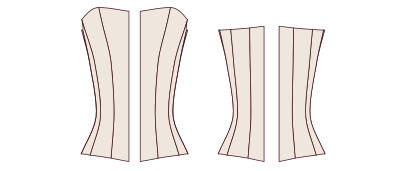
CORSE 106Corsé sobre pecho con cordón delante y detrás · 6 piezas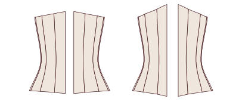
CORSE 107Corsé bajo pecho con cordón delante y detrás · 7 piezas CORSE 108Corsé sobre pecho con cordón delante y detrás · 7 piezas
CORSE 108Corsé sobre pecho con cordón delante y detrás · 7 piezas CORSE 109Corsé bajo pecho con cordón delante y detrás · 8 piezas
CORSE 109Corsé bajo pecho con cordón delante y detrás · 8 piezas CORSE 110Corsé sobre pecho con cordón delante y detrás · 8 piezas
CORSE 110Corsé sobre pecho con cordón delante y detrás · 8 piezas
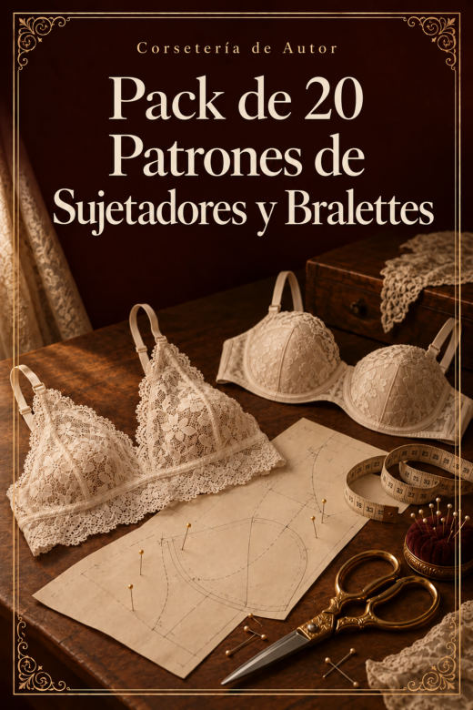
Regalo IV · Pack de 20 Patrones de Sujetadores y Bralettes
20 patrones en PDF · cada uno en A4 por partes y en plóter a tamaño real.
De triángulo 6
 SUJETADOR 001Bralette de triángulo clásico
SUJETADOR 001Bralette de triángulo clásico SUJETADOR 002Bralette de triángulo con banda ancha
SUJETADOR 002Bralette de triángulo con banda ancha SUJETADOR 003Bralette de triángulo con espalda cruzada
SUJETADOR 003Bralette de triángulo con espalda cruzada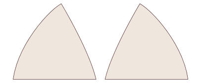
SUJETADOR 004Bralette de triángulo con tirantes dobles SUJETADOR 005Bralette de triángulo de encaje con festón
SUJETADOR 005Bralette de triángulo de encaje con festón SUJETADOR 006Bralette drapeado con lazo
SUJETADOR 006Bralette drapeado con lazo
Halter 2
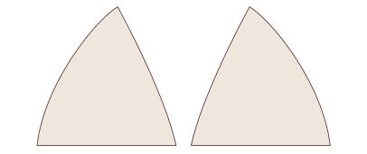
SUJETADOR 007Bralette halter atado al cuello SUJETADOR 008Bralette halter con banda
SUJETADOR 008Bralette halter con banda
Escote en pico y cruzados 2
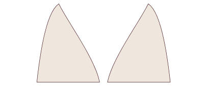
SUJETADOR 009Bralette con escote en pico profundo SUJETADOR 010Bralette cruzado por delante
SUJETADOR 010Bralette cruzado por delante
Longline 2
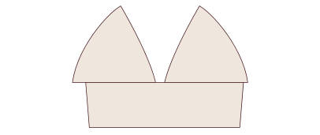
SUJETADOR 011Bralette longline recto SUJETADOR 012Bralette longline en pico
SUJETADOR 012Bralette longline en pico
Bandeau 2
 SUJETADOR 013Bandeau liso
SUJETADOR 013Bandeau liso SUJETADOR 014Bandeau con frunce central
SUJETADOR 014Bandeau con frunce central
Con copa formada por costuras 4
 SUJETADOR 015Sujetador balconette sin aro (copa de 3 piezas)
SUJETADOR 015Sujetador balconette sin aro (copa de 3 piezas) SUJETADOR 016Sujetador con costura vertical en la copa, sin aro
SUJETADOR 016Sujetador con costura vertical en la copa, sin aro SUJETADOR 017Sujetador de copa entera sin aro
SUJETADOR 017Sujetador de copa entera sin aro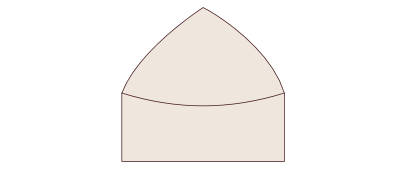
SUJETADOR 018Sujetador de encaje con copa de 2 piezas
Sujetadores deportivos 2
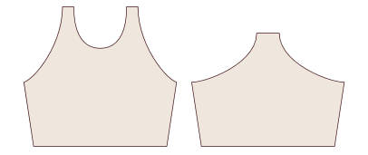
SUJETADOR 019Sujetador deportivo con espalda nadadora SUJETADOR 020Sujetador deportivo con espalda cruzada
SUJETADOR 020Sujetador deportivo con espalda cruzada
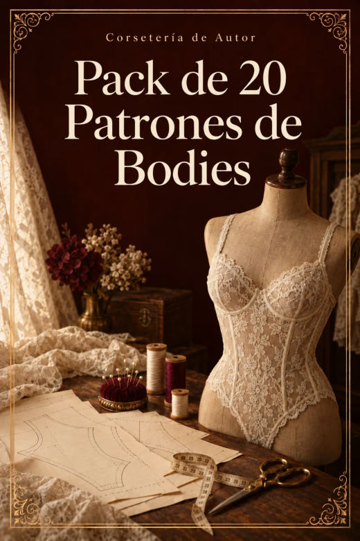
Regalo V · Pack de 20 Patrones de Bodies
20 patrones en PDF · cada uno en A4 por partes y en plóter a tamaño real.
Bodies 20
 BODY 001Body con escote redondo · espalda cerrada
BODY 001Body con escote redondo · espalda cerrada BODY 002Body con escote redondo · espalda abierta en U
BODY 002Body con escote redondo · espalda abierta en U BODY 003Body con escote redondo · espalda cruzada
BODY 003Body con escote redondo · espalda cruzada BODY 004Body con escote redondo · espalda abierta en gota
BODY 004Body con escote redondo · espalda abierta en gota BODY 005Body con escote en pico · espalda cerrada
BODY 005Body con escote en pico · espalda cerrada BODY 006Body con escote en pico · espalda abierta en U
BODY 006Body con escote en pico · espalda abierta en U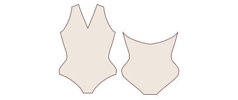
BODY 007Body con escote en pico · espalda cruzada BODY 008Body con escote en pico · espalda abierta en gota
BODY 008Body con escote en pico · espalda abierta en gota BODY 009Body con escote cuadrado · espalda cerrada
BODY 009Body con escote cuadrado · espalda cerrada BODY 010Body con escote cuadrado · espalda abierta en U
BODY 010Body con escote cuadrado · espalda abierta en U BODY 011Body con escote cuadrado · espalda cruzada
BODY 011Body con escote cuadrado · espalda cruzada BODY 012Body con escote cuadrado · espalda abierta en gota
BODY 012Body con escote cuadrado · espalda abierta en gota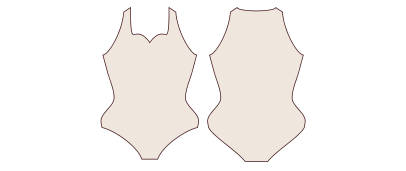
BODY 013Body con escote corazón · espalda cerrada BODY 014Body con escote corazón · espalda abierta en U
BODY 014Body con escote corazón · espalda abierta en U BODY 015Body con escote corazón · espalda cruzada
BODY 015Body con escote corazón · espalda cruzada BODY 016Body con escote corazón · espalda abierta en gota
BODY 016Body con escote corazón · espalda abierta en gota BODY 017Body halter · espalda cerrada
BODY 017Body halter · espalda cerrada BODY 018Body halter · espalda abierta en U
BODY 018Body halter · espalda abierta en U BODY 019Body halter · espalda cruzada
BODY 019Body halter · espalda cruzada BODY 020Body halter · espalda abierta en gota
BODY 020Body halter · espalda abierta en gota
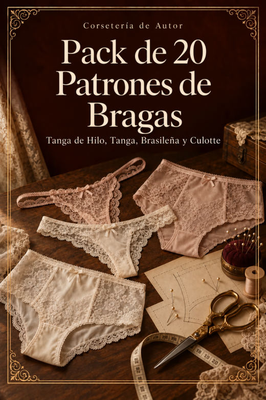
Regalo VI · Pack de 20 Patrones de Bragas: Tanga de Hilo, Tanga, Brasileña y Culotte
20 patrones en PDF · cada uno en A4 por partes y en plóter a tamaño real.
Tanga de hilo 5
 BRAGUITA 001Tanga de hilo clásico
BRAGUITA 001Tanga de hilo clásico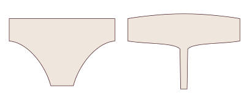
BRAGUITA 002Tanga de hilo de talle alto BRAGUITA 003Tanga de hilo con tiras laterales
BRAGUITA 003Tanga de hilo con tiras laterales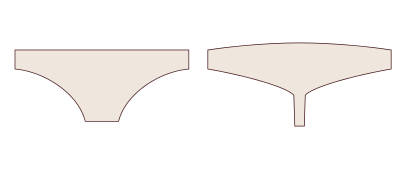
BRAGUITA 004Tanga de hilo de encaje con delantero doble BRAGUITA 005Tanga de hilo brasileño en pico
BRAGUITA 005Tanga de hilo brasileño en pico
Tanga 5
 BRAGUITA 006Tanga clásico de talle bajo
BRAGUITA 006Tanga clásico de talle bajo BRAGUITA 007Tanga de talle medio
BRAGUITA 007Tanga de talle medio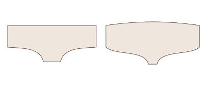
BRAGUITA 008Tanga con laterales anchos BRAGUITA 009Tanga brasileño de pierna alta
BRAGUITA 009Tanga brasileño de pierna alta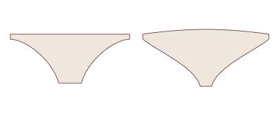
BRAGUITA 010Tanga con tiras dobles
Braguita brasileña 5
 BRAGUITA 011Braguita brasileña clásica
BRAGUITA 011Braguita brasileña clásica BRAGUITA 012Braguita brasileña de talle alto
BRAGUITA 012Braguita brasileña de talle alto BRAGUITA 013Braguita brasileña de pierna alta
BRAGUITA 013Braguita brasileña de pierna alta BRAGUITA 014Braguita brasileña con laterales de encaje
BRAGUITA 014Braguita brasileña con laterales de encaje BRAGUITA 015Braguita brasileña retro de cintura alta
BRAGUITA 015Braguita brasileña retro de cintura alta
Culotte 5
 BRAGUITA 016Culotte clásico
BRAGUITA 016Culotte clásico BRAGUITA 017Culotte de talle alto
BRAGUITA 017Culotte de talle alto BRAGUITA 018Culotte de pierna recta
BRAGUITA 018Culotte de pierna recta BRAGUITA 019Culotte de encaje con festón
BRAGUITA 019Culotte de encaje con festón BRAGUITA 020Culotte tipo short
BRAGUITA 020Culotte tipo short
Siguiente paso
Guarda esta página en favoritos: es tu acceso de por vida a la colección. Elige tu primer patrón, imprímelo y empieza por la toile.